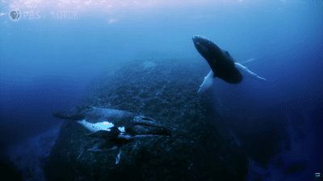

Biología Marina
El océano no es simplemente donde la tierra se encuentra cubierta de agua. El lecho marino es geológicamente distinto de los continentes. Está atrapado en un ciclo perpetuo de nacimiento y destrucción que moldea el océano y controla gran parte de la geología e historia geológica de los continentes.
Procesos geológicos que ocurren bajo las aguas del mar afectan no solo a la vida marina, sino también a la tierra seca. Los procesos que moldean las cuencas oceánicas ocurren lentamente, a lo largo de decenas y cientos de millones de años. En esta escala de tiempo, donde la vida humana es apenas un parpadeo, las rocas sólidas fluyen como líquido, los continentes enteros se desplazan por la superficie de la Tierra y las montañas surgen de llanuras planas. Para entender el fondo marino, debemos aprender a adoptar el punto de vista poco familiar del tiempo geológico. La geología es muy importante para la biología marina. Los hábitats, o los lugares donde los organismos viven, son moldeados directamente por los procesos geológicos. La forma de las costas, la profundidad del agua, si el fondo es fangoso, arenoso o rocoso, y muchas otras características de un hábitat marino son determinadas por esta geología. La historia geológica de la vida también se llama Paleontología. La presencia de grandes cantidades de agua líquida hace que nuestro planeta sea único. La mayoría de los otros planetas tienen muy poca agua, y en aquellos que la tienen, el agua existe solo como hielo perpetuamente congelado o como vapor en la atmósfera. En cambio, la Tierra es realmente un planeta acuático. El océano cubre la mayor parte del globo y desempeña un papel crucial en la regulación de nuestro clima y atmósfera. Sin agua, la vida misma sería imposible. Nuestro océano cubre el 72% de la superficie de la Tierra. No está distribuido equitativamente con respecto al ecuador. Aproximadamente dos tercios del área terrestre de la Tierra se encuentran en el Hemisferio Norte, que solo tiene un 61% de océano. Alrededor del 80% del Hemisferio Sur es océano. El océano se clasifica tradicionalmente en cuatro grandes cuencas. El Pacífico es el más profundo y el más grande, casi tan grande como todos los demás combinados. El "Océano Atlántico" es un poco más grande que el "Océano Índico", pero los dos son similares en cuanto a la profundidad promedio. El Ártico es el más pequeño y poco profundo. Conectados o marginales a las principales cuencas oceánicas, hay varios mares poco profundos, como el Mar Mediterráneo, el Golfo de México y el Mar de China Meridional. Aunque generalmente tratamos a los océanos como entidades separadas, en realidad están interconectados. Esto se puede ver más fácilmente al observar un mapa del mundo desde el Polo Sur. Desde esta perspectiva, es claro que el Pacífico, el Atlántico y los océanos Índico son grandes ramas de un vasto sistema oceánico. Las conexiones entre las principales cuencas permiten que el agua de mar, los materiales y algunos organismos se muevan de un "océano" a otro. Debido a que los "océanos" son en realidad un gran sistema inter conectado, los oceanógrafos a menudo hablan de un único océano mundial. También se refieren al cuerpo continuo de agua que rodea la Antártida como el Océano Austral. Se cree que la Tierra y el resto del sistema solar se originaron hace unos 4.500 millones de años a partir de una nube o nubes de polvo. Este polvo era escombros que quedaron de una enorme explosión cósmica llamada el Big Bang, que los astrofísicos estiman que ocurrió hace unos 15.000 millones de años. Las partículas de polvo chocaron entre sí, fusionándose en partículas más grandes. Estas partículas más grandes chocaron a su vez, uniéndose en rocas del tamaño de guijarros que chocaron para formar rocas más grandes, y así sucesivamente. El proceso continuó, construyendo finalmente la Tierra y otros planetas. Se generó tanto calor cuando se formó la Tierra temprana que el planeta probablemente estaba fundido. Esto permitió que los materiales se asentaran dentro del planeta según su densidad. La densidad es el peso, o más correctamente, la masa, de un volumen dado de una sustancia. Obviamente, una libra de poliestireno pesa más que una onza de plomo, pero la mayoría de las personas piensan en el plomo como "más pesado" que el poliestireno. Esto se debe a que el plomo pesa más que el poliestireno si se comparan volúmenes iguales de los dos. En otras palabras, el plomo es más denso que el poliestireno. La densidad de una sustancia se calcula dividiendo su masa por su volumen. Si dos sustancias se mezclan, el material más denso tenderá a hundirse y el menos denso flotará. Durante el tiempo en que la joven Tierra estaba fundida, el material más denso tendía a fluir hacia el centro del planeta, mientras que los materiales más ligeros flotaban hacia la superficie. El material liviano en la superficie se enfrió para formar una delgada corteza. Con el tiempo, la atmósfera y los océanos comenzaron a formarse. Si la Tierra se hubiera asentado en una órbita ligeramente más cercana al sol, el planeta habría estado tan caliente que toda el agua se habría evaporado en la atmósfera. Con una órbita ligeramente más lejana al sol, toda el agua estaría perpetuamente congelada. Afortunadamente para nosotros, nuestro planeta orbita alrededor del sol en una zona estrecha en la que el agua líquida puede existir. Sin agua líquida, no habría vida en la Tierra. La Tierra está compuesta por tres capas principales: el núcleo rico en hierro, el manto semiplástico y la delgada corteza externa. La corteza es la capa más familiar de la Tierra. En comparación con las capas más profundas, es extremadamente delgada, como una piel rígida flotando sobre el manto. La composición y características de la corteza difieren mucho entre los océanos y los continentes. La distinción geológica entre los océanos y los continentes se debe a las diferencias físicas y químicas en las rocas mismas, en lugar de si las rocas están o no cubiertas de agua. La parte de la Tierra cubierta de agua, el océano, está cubierta debido a la naturaleza de la roca subyacente. Las rocas de la corteza oceánica, que forman el fondo marino, consisten en minerales llamados basalto que tienen un color oscuro. La mayoría de las rocas continentales son de un tipo general llamado granito, que tiene una composición mineral diferente al basalto y generalmente es más claro en color. La corteza oceánica es más densa que la corteza continental, aunque ambas son menos densas que el manto subyacente. Se puede pensar en los continentes como bloques gruesos de corteza "flotando" sobre el manto, al igual que los icebergs flotan en el agua. La corteza oceánica también flota sobre el manto, pero debido a que es más densa, no flota tan alto como la corteza continental. Por eso los continentes se encuentran elevados y secos sobre el nivel del mar y la corteza oceánica se encuentra por debajo del nivel del mar y está cubierta de agua. La corteza oceánica y la corteza continental también difieren en cuanto a su edad geológica. La corteza oceánica más antigua tiene menos de 200 millones de años, bastante joven en términos geológicos. Por otro lado, las rocas continentales pueden ser muy antiguas, de hasta 3.800 millones de años...! Después de la Segunda Guerra Mundial, el sonar permitió los primeros relevamientos detallados de grandes áreas del fondo marino. Estos relevamientos llevaron al descubrimiento del sistema de dorsales oceánicas, una cadena continua de montañas y valles volcánicos submarinos que rodea el globo terrestre como las costuras de una pelota de béisbol. El sistema de dorsales oceánicas es la característica geológica más grande del planeta. A intervalos regulares, la dorsal oceánica se desplaza hacia un lado u otro por grietas en la corteza terrestre conocidas como fallas de transformación. Ocasionalmente, las montañas submarinas de la dorsal se elevan tanto que emergen a la superficie formando islas, como Islandia y las Azores. La porción de la dorsal en el Atlántico, conocida como Dorsal Mesoatlántica, se extiende justo en el centro del océano Atlántico, siguiendo de cerca las curvas de las costas opuestas. La dorsal forma una "Y" invertida en el océano Índico y se extiende por el lado este del Pacífico. La sección principal de la dorsal en el Pacífico oriental se llama Rise del Pacífico Oriental. Los relevamientos también revelaron la existencia de un sistema de depresiones profundas en el fondo marino llamadas fosas. Las fosas son especialmente comunes en el Pacífico. Cuando se descubrió el sistema de dorsales oceánicas y las fosas, los geólogos querían saber cómo se formaron y comenzaron a estudiarlos intensivamente. Descubrieron que hay una gran cantidad de actividad geológica alrededor de estas características. Los terremotos se agrupan en las dorsales, por ejemplo, y los volcanes son especialmente comunes cerca de las fosas. Las características de las rocas del fondo marino también están relacionadas con las dorsales oceánicas. A partir de 1968, un barco de perforación en aguas profundas, el Glomar Challenger, obtuvo muestras de las rocas reales del fondo marino. Se descubrió que cuanto más lejos estén las rocas de la cresta de la dorsal, más antiguas son. Uno de los hallazgos más importantes provino del estudio del magnetismo de las rocas del fondo marino. Bandas de rocas alternando entre magnetismo normal e invertido se extienden en paralelo a la dorsal. Fue el descubrimiento de las anomalías magnéticas en el fondo marino, junto con otras evidencias, lo que finalmente llevó a una comprensión de la tectónica de placas. La superficie de la Tierra se divide en varias placas. Estas placas, compuestas por la corteza y las partes superiores del manto, forman la litosfera. Las placas tienen aproximadamente 100 km de espesor. A medida que se crea nueva litosfera, se destruye la antigua en algún otro lugar. De lo contrario, la Tierra tendría que expandirse constantemente para dar cabida a la nueva litosfera. La litosfera se destruye en las fosas. Se forma una fosa cuando dos placas chocan y una placa se sumerge debajo de la otra y se desliza de regreso al manto. Este movimiento hacia abajo de la placa hacia el manto se llama subducción. Debido a que la subducción ocurre en las fosas, a menudo se llaman zonas de subducción. La subducción es el proceso que produce terremotos y volcanes, también submarinos. Los volcanes pueden elevarse desde el fondo marino para crear cadenas de islas volcánicas.  Ahora nos damos cuenta de que la superficie de la Tierra ha experimentado cambios drásticos. Los continentes han sido llevados a largas distancias por el movimiento del fondo marino, y las cuencas oceánicas han cambiado de tamaño y forma. De hecho, han nacido nuevos océanos. El conocimiento del proceso de la tectónica de placas ha permitido a los científicos reconstruir gran parte de la historia de estos cambios. Los científicos han descubierto, por ejemplo, que los continentes alguna vez estuvieron unidos en un supercontinente llamado Pangea, que comenzó a separarse hace unos 180 millones de años. Desde entonces, los continentes se han movido a su posición actual.
Las características del agua de mar se deben tanto a la naturaleza del agua pura como a los materiales disueltos en ella. Los sólidos disueltos en el agua de mar provienen de dos fuentes principales. Algunos son producidos por la alteración química de rocas en tierra y son transportados al mar por los ríos. Otros materiales provienen del interior de la Tierra. La mayoría de ellos se liberan en el océano a través de fuentes hidrotermales. Algunos se liberan en la atmósfera desde los volcanes y llegan al océano en forma de lluvia y nieve. El agua de mar contiene al menos un poco de casi todo, pero la mayoría de los solutos o materiales disueltos están compuestos por un grupo sorprendentemente pequeño de iones. De hecho, solo seis iones componen más del 98% de los sólidos en el agua de mar. El sodio y el cloruro representan aproximadamente el 85% de los sólidos, por eso el agua de mar tiene sabor a sal de mesa. La salinidad del agua afecta fuertemente a los organismos que viven en ella. La mayoría de los organismos marinos, por ejemplo, morirán en agua dulce. Incluso pequeños cambios en la salinidad dañarán a algunos organismos. Referencias Biología Marina, Peter Castro, Ph.D. y Michael E. Huber, Ph.D., Parte uno. Una Historia Natural de los Océanos (BBC)